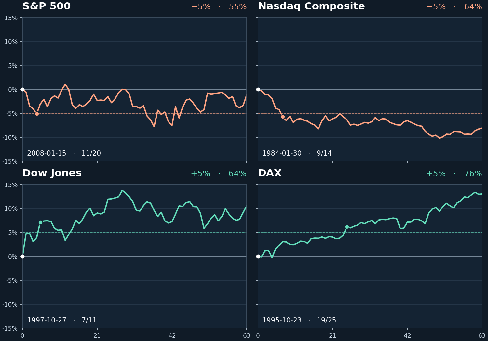

Most frequent 63-session scenario by index
At the November 20, 2026 close, each index is matched to its own historical drawdowns. Each panel shows one representative historical path for the most frequent outcome. The percentage is the frequency of that outcome. The exact line has no estimated probability.

Horizontal axis: trading sessions after crossing. Vertical axis: change from the crossing close. The dot marks the first qualifying close. The date identifies the historical example.
Calculation and data
One observation per prior record cycle, at the first close at least as far below its record as today. The current record cycle is excluded. We require 63 subsequent sessions. Outcomes are first close up 5%, first close down 5%, or neither. Within the winning group, the plotted historical path minimizes total absolute distance from the daily group medians. Time to threshold is the group median. Wilson 95% intervals describe sampling uncertainty. Coverage differs by index; the German DAX includes reinvested dividends and the three US indices use price returns.
JSON
When did the index rally after comparable drawdowns?
One observation per drawdown from a record close. The reference is the first daily close at least as far below its record as the current index. Each observation requires 63 subsequent trading sessions. A hit is any close at or above the target relative to the reference, even after a further decline. The 95% Wilson intervals omit uncertainty from regime changes and dependence between periods.
Dates and rally size for every episode
The leg starts at the lowest close between the crossing and the first +5% hit. After that hit, we track the highest close until a 5% pullback from the running high, even beyond session 63. A missing confirmation means the available history ended before the pullback. Lows and peaks are identifiable only in hindsight.
Peaks, troughs and recoveries
Select a peak to see corporate leaders, inflation and industries. Record cycles include all declines until the index regains its prior high. Local cycles reset after a 10% rally. The two views overlap.
Historical analogues at the cutoff
Prior record cycles must reach the current drawdown. At the first crossing we compare elapsed calendar days and year-over-year CPI with a two-month lag. Distance equals the absolute log difference in days plus one, plus the absolute CPI difference divided by five. A smaller distance means a closer match. The final drawdown is reported separately and plays no role in the ranking. The weights have no predictive calibration.
How has leadership changed since June 2026?
Constituents come from the archived June 30, 2026 S&P list. The sample uses one share class per issuer and annual 10-K filings published in January–June. Within each sector we compare four issuers with the highest and four with the lowest annual net income divided by year-end assets. Baskets start equal-weighted. Returns use adjusted USD prices. WBD includes the $31.01666668 cash merger payment held from October 6. Issuers without eligible filings are excluded. Differences in business models affect ROA, especially in financials and real estate.
Sectors during the current correction
Earnings revisions for the seven leaders
USD earnings-per-share consensus for the same fiscal year per issuer. The November 22 snapshot is compared with the vendor’s 90-days-ago estimate. Fiscal year ends differ.
Consensus S&P 500 earnings growth for Q4 2026 rose from 24.4% on July 2 to 28.9% on November 20, a 4.5-point increase. For Q3 the seven largest technology-related companies’ expected earnings growth went from 33.6% on September 30 to 33.2% in the October report. Actual growth reached 27.0%, 6.6 points below the September estimate. Matched June 30 and November 20 estimates for each of the seven issuers are unavailable.
Definitions, coverage and sources
Fixed historical snapshot. The US price index excludes dividends and inflation. Sources include Shiller monthly averages from January 1925 to November 1927 (no 10% decline in that short series), the daily Schwert Dow proxy indexed to 100 at the end of 1924, and daily S&P prices from December 30, 1927. The record resets when series change. The modern S&P 500 started in 1957. Earlier values use predecessors. An open trough is the lowest observed close so far. The cycle table uses calendar days. Its retrospective 10% bounce is measured from the low. Full recovery means regaining the prior peak.
US CPI-U is the unadjusted year-over-year rate for the stated month. The NBER recession classification is retrospective. CAPE is from the prior available Shiller month. A high valuation alone cannot establish a bubble. Industry returns include dividends and use Kenneth French’s twelve value-weighted portfolios. Both endpoints must be covered. A dash means information is unavailable or still pending.